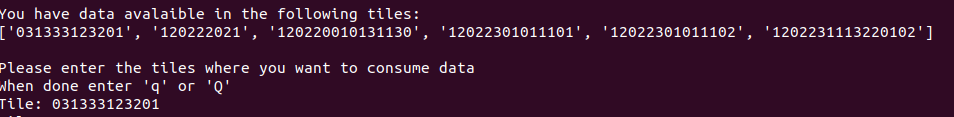
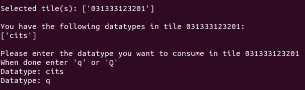
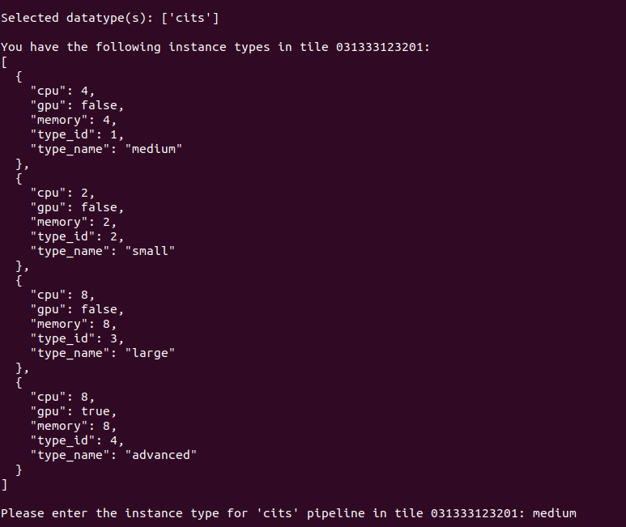
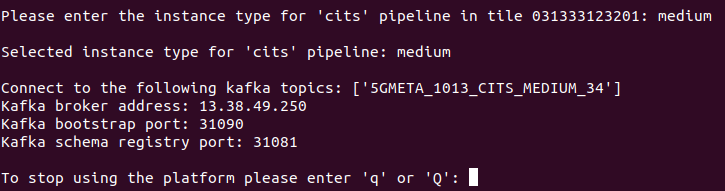

5GMETA platform is an IoT oriented platform that produces data from vehicles to be consumed by third party applications in order to get data from several types:
- CITS
- json like messages with data extracted from the vehicle (ex: GPS position, etc)
- Example
- images
- jpg
- Video streaming
Guide to consuming data
Registering into the application
First step to start using 5GMETA platform will be registering on it.
Please go to Registration web page and fill the form with the data.
Once you have registered you will be able to access the platform and start consuming data. Next you will be guided with some instructions to get that purpouse.
Software requirements
This guide is oriented to be executed in an Ubuntu 20.04 environment.
Extra packages to be installed
First of all, you will need to install some dependencies (apt-get):
- python3-avro
- python3-confluent-kafka
- gstreamer1.0-plugins-bad (only if you are going to consume video)
- gstreamer1.0-libav (only if you are going to consume video)
- python3-gst-1.0 (only if you are going to consume video)
Also install with pip3:
- kafka-python
- numpy
- python-qpid-proton
Platform-client helper application
There is a guided applicaction that will help you to get the apropriate parameters from 5GMETA platform to get the data you need. You can execute it by downloading all content from folder:
Once you have donwload that software you can run it by executing:
$ python3 client.py
in your command line.
Client usage
Once you have executed the previous command you will be prompted for: * 5GMETA username * 5GMETA password

After entering your username/password, client will ask you if you want to: * Consume data from 5GMETA platform * Produce an event in a vehicle connected to 5GMETA platform

In our case we have decided to consume data, so we push c.
Inmediately client will show which tile have data.

And will ask you to select one of them to consume data from.
You can stop selecting tiles by pushing q in your keyboard.
After selecting tiles client will show which datatype is available in the tiles you have selected.

And will ask you to select which datatype do you want to consume.
Once selected you will be prompted with the instancetype you can use in the MEC that is managin data from that tile

and will be asked to choose one.
Once selected you will be prompted with the parameters from 5GMETA platform you have to use in consumer examples

Please notice that the parameters showed in that ouput ARE VALID ONLY IF YOU KEEP client.py RUNNING, once you stop it by pressing q those parameters could not be valid for your consumer application.
PLEASE DON'T STOP client.py APPLICATION BY PUSHING CTRL-C
Consumer examples
5GMETA platform offers some examples to comsume those data.
Those consumer clients will ask you for the parameters obtained as output in the Client usage section.
CITS consumer
This client is a Kafka client that will consume CITS data from 5GMETA platform and will print on the command line output. It takes as input parameters:
- Kafka topic
- Kafka broker address
- Kafka bootstrap port
- Kafka schema registry port
Glossary
Tile
A tile is a square area in the Earth surface defined to define some surface
*Tile example location for tile 03133312320110220